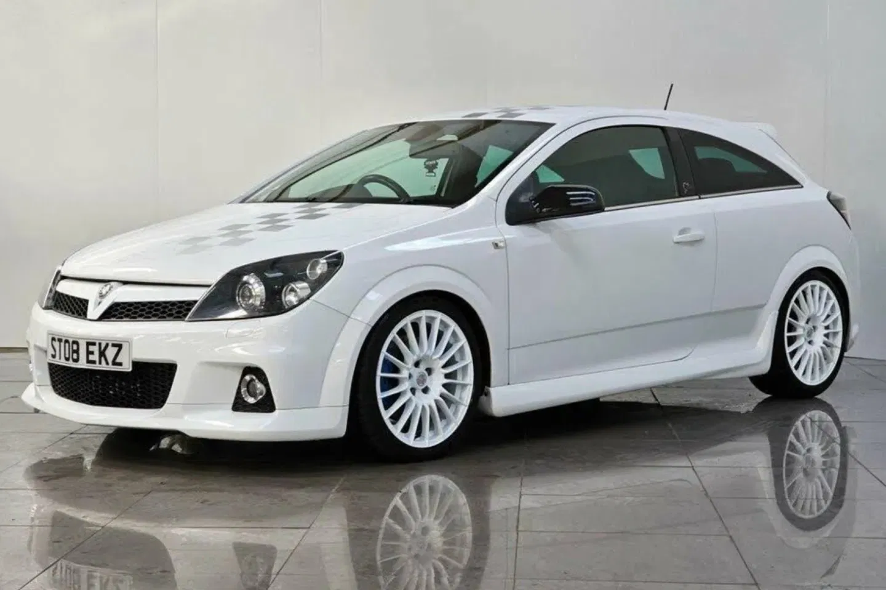
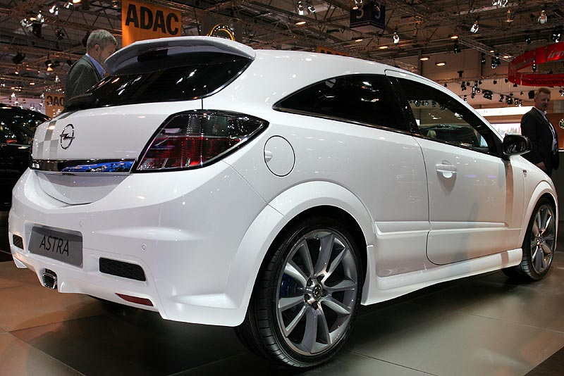
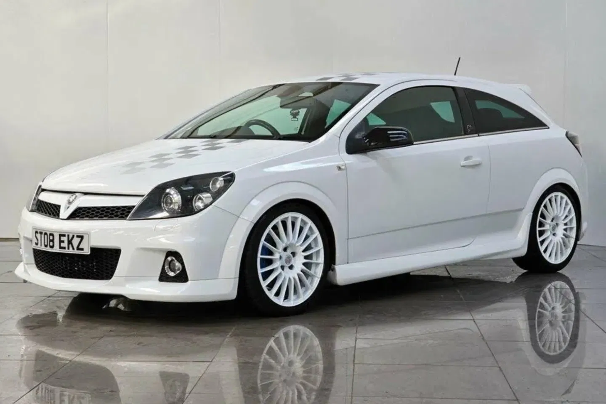
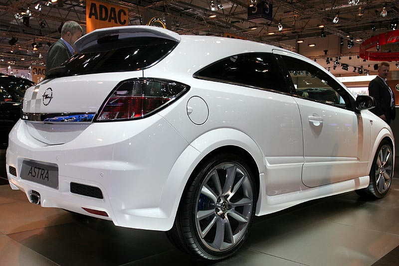

Opel Astra H Nürburgring Edition to limitowana edycja sportowego hatchbacka, która została zaprezentowana w 2008 roku. Model ten powstał, aby uczcić współpracę Opla z legendarnym torem Nürburgring, gdzie przeprowadzano intensywne testy i rozwój samochodów marki Opel. Edycja Nürburgring była oparta na wersji OPC (Opel Performance Center) i wyróżniała się zarówno osiągami, jak i unikalnym designem. Wyprodukowano jedynie 835 egzemplarzy tego modelu, co czyni go niezwykle rzadkim i pożądanym przez kolekcjonerów. Liczba ta nie była przypadkowa – nawiązywała do czasu okrążenia toru Nürburgring Nordschleife przez Astrę OPC, który wynosił 8 minut i 35 sekund. Pod względem stylistycznym Astra H Nürburgring Edition wyróżniała się białym nadwoziem z charakterystycznym wzorem szachownicy biegnącym przez maskę, dach i tylną klapę. Samochód wyposażono w 19-calowe felgi z lekkich stopów oraz sportowe opony, które podkreślały jego dynamiczny charakter. Wnętrze zostało wykończone z dbałością o detale – fotele Recaro, karbonowe akcenty oraz tabliczka z numerem seryjnym dodawały ekskluzywności. Pod maską znajdował się turbodoładowany silnik benzynowy o pojemności 2.0 litra, generujący moc 240 KM. Silnik ten współpracował z 6-biegową manualną skrzynią biegów, co pozwalało na przyspieszenie od 0 do 100 km/h w zaledwie 6,4 sekundy i osiągnięcie prędkości maksymalnej 244 km/h. Dzięki zaawansowanemu układowi jezdnemu IDS Plus2 samochód oferował znakomitą dynamikę i precyzję prowadzenia. Astra H Nürburgring Edition to nie tylko samochód, ale także hołd dla motorsportu i technologii, które Opel rozwijał przez lata. Do dziś pozostaje ikoną wśród fanów marki i miłośników sportowych hatchbacków.


 


